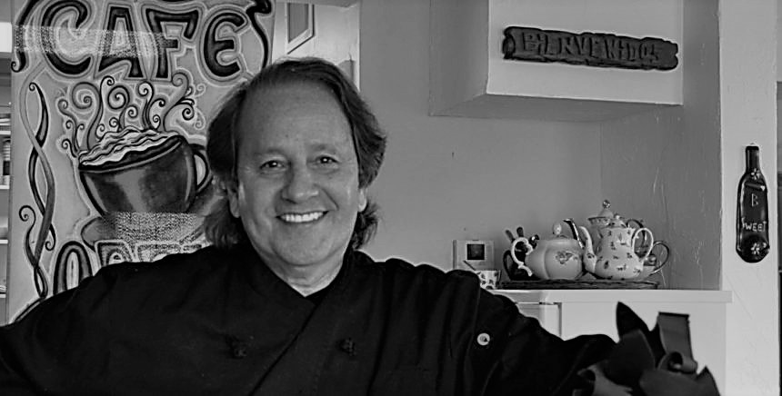

Mis Padres

❮
❯
Tom Worhach
El centro de la casa de mis padres, era sin duda la Cocina. Acompañada inseparablemente de un comedor diario, concentraba todos los eventos importantes que recuerde.
Es allí donde comencé a sospechar que cocinar y comer era mucho más que simplemente alimentarse.
No existía hecho de relevancia que no fuera comunicado en ese ámbito y acompañado además por la comida apropiada. El mate para la compañia, el café para lo serio, las comidas pesadas para los festejos o un té para una visita formal.
Comer y respirar eran casi sinónimos para ellos, podría decirse, un mismo estado de ánimo.
Lo que he aprendido en ese espacio, en esa verdadera universidad de la cultura, no puede compararse a nada que haya conocido después.
Se que cada proceso, tiene su tiempo y que el reposo es necesario, porque es parte de la creación.
Se que nada debe despreciarse, cada ingrediente, cada uno, por menor que sea, tiene su influencia.
Se que voy a cambiar, que mi estado de ánimo no es indiferente a la transformación de la materia.
Se que el orden es importante y que hay que estar preparado. No siempre es posible invertir los pasos.
Se que la experiencia tiene valor, pero que toda receta se puede modificar.
Se del esfuerzo y de la entrega y que no serán nunca indiferentes.
Pero no exageremos, después de todo, solo estamos hablando de Cocina, verdad ?.
Conocí a Tom a través de una gran amiga que es su esposa, Karina.
Formalmente podría decirse que apenas sabíamos algo de nosotros.
Si bien tuve contacto algunas veces con sus hijos y también pude
conocer los relatos lejanos de la vida familiar en su casa materna,
no dejaba de ser una mirada deformada por el cristal de otro idioma,
de otra cultura, de un mundo lejano y quizás algo exótico que exigía
mi limitada capacidad de entendimiento. Me pregunto, en definitiva,
qué comprende el conocimiento del otro. Un cúmulo de datos biográficos
no parece el sendero adecuado para definir una relación.
Me arriesgo a decir que aún sin ninguna información de por medio
existen personas que nos resultan afines con su simple presencia.
Algo mágico, simplemente sucede o no. Algo tan instantáneo que podría
encerrarse en un gesto, como la travesía recurrente de una sonrisa
que derribaba todo a su encuentro, así lo recuerdo.
Es que él era verdaderamente un Cocinero. Y no hablo del gran Chef,
que también lo era, sino del Cocinero que batía las ollas en una pequeña
cocina al ritmo de los latidos de recetas imposibles. Creo que, para
los Cocineros, ningún aspecto de lo humano les es desconocido, pero
aun así prefieren la complicidad de un buen plato. En cada una de sus
creaciones, podía captarse la sensación del hogar, comer con él era
siempre comer en casa. Su gran técnica le era innata, el acto de pensar
en el otro podía masticarse.
Lo extrañamos porque sabía acariciarnos desde un lugar que pocos pueden,
desde la profundidad de un calor conocido, dónde no hacen falta las palabras.
Solo una mesa, una comida y una mirada.